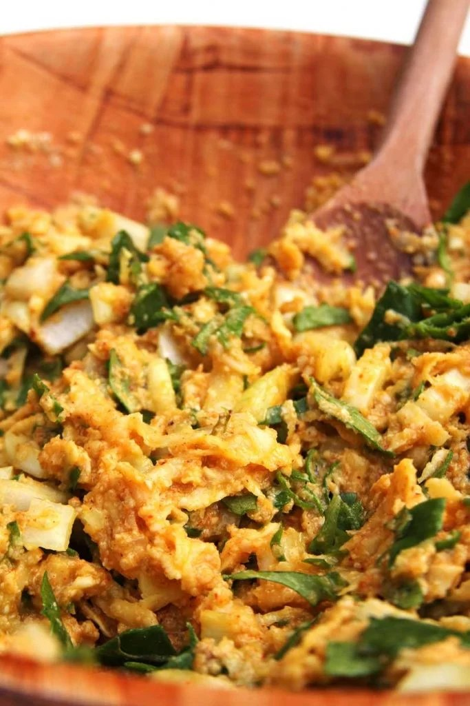
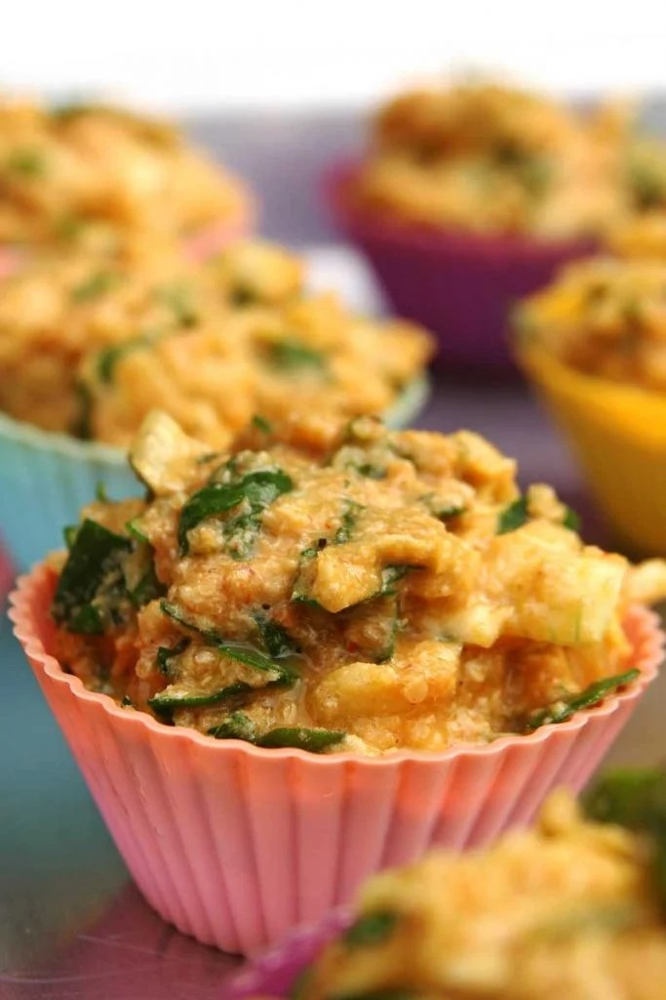

1 1/2 xícaras de batata-doce ralada crua (150 gramas)
4 ovos inteiros (200 gramas)
1/3 xícara de óleo de coco (80 ml)
3/4 xícara de farinha de amendoim (75 gramas)
3/4 xícara de quinoa em flocos (68 gramas)
1 1/2 colher de chá de sal (7,5 gramas)
1 colher de sopa de fermento em pó (15 gramas)
1 colher de chá de páprica picante
1/4 colher de chá de noz moscada ralada na hora
1 colher de sopa de vinagre de maçã (15 ml)
1/2 colher de chá de bicarbonato de sódio (2 gramas)
1 xícara de folhas de espinafre cruas picadas (80 gramas)
1 xícara de cebola crua picada (100 gramas)
Comece higienizando as folhas de espinafre, pique-as e depois meça 1 xícara. Depois corte a cebola em cubos pequenos, meça 1 xícara e depois reserve o recheio.
Unte a forma que você vai utilizar e preaqueça o forno a 180º C.
Descasque a batata-doce e rale-a em um ralo grosso, você pode usar ela com a casca se ela for orgânica. Meça 1 1/2 xícaras e coloque em uma bacia grande.
Sobre a batata-doce adicione os ovos, o óleo, o sal, os temperos (páprica e noz moscada), o vinagre e mexa com uma colher de pau ou colher grande.
Adicione a farinha de amendoim e a quinoa em flocos e mexa novamente. A massa fica grossa e consistente, é assim mesmo.
Agregue o recheio à massa (cebola e espinafre).
Finalize com o fermento em pó e o bicarbonato de sódio.

Transfira a massa para 12 forminhas de silicone ou para uma forma média e leve para assar em forno preaquecido à 180º C por aproximadamente 25 minutos ou até que você faça o teste do palito e ele saia limpo.

Se você assar nas forminhas de silicone não deixe que esfriem por completo dentro da forma, quando a massa fica muito tempo esfriando nessas forminhas ela costuma suar a lateral e dar uma murchada na massa. Se assar em uma forma média deixe pelo menos amornar antes de cortar a massa e servir os pedaços.
DICAS
Para congelar esta receita de bolo de batata doce salgado é só colocar as porções em sacos plásticos adequados para o freezer, tente não sobrepor as porções que após congeladas elas grudam juntas. Para descongelar eu coloco a porção sobre um papel toalha e levo ao micro-ondas por aproximadamente 30 segundos, eu viro o bolo de batata doce na metade do tempo (15 segundos), acho que desta maneira descongela melhor. Se você não quiser usar o micro-ondas é só deixar de um dia para o outro na geladeira e depois reaquecer em forno médio por uns 10 minutos.
Como este bolo de batata doce salgado contém vários ovos e um recheio mais úmido o ideal é que você mantenha-o refrigerado, refrigerado ele dura uns 3 ou 4 dias e congelado dura até 3 meses.
Você pode substituir a batata-doce por mandioca, mandioquinha, abóbora, batata, beterraba ou qualquer outro tubérculo.
Esta receita não funciona sem os ovos, por isso ela nunca será vegana.
Lembre-se que se você não comprar a farinha de amendoim já moída você deve medir a quantidade (3/4 xícara) após processar os grãos torrados no liquidificador. Sempre que você processa castanhas, grãos, sementes, etc eles sempre reduzem e compactam.
Você pode usar outros recheios que tiver em casa, lembre-se apenas de usar entre 1 1/2 e 2 xícaras de recheio.
Se você quiser usar tomate no recheio retire as sementes, o tomate com as sementes fica muito aguado e interfere na textura final da massa.
Minha sugestão também é que caso você use tomate picado não use mais que 1/2 xícara.
Você pode comer este bolo de batata doce salgado para a janta acompanhado de uma boa salada verde.
OUTRAS OPÇÕES DE RECHEIO
1/2 xícara de frango desfiado + 1/2 xícara de cebola + 1/2 xícara de sementes de abóbora + 1/2 xícara de cenoura ralada
1/2 xícara de brócolis + 1/2 azeitonas pretas + 1/2 xícara cenoura + 1/2 xícara cebola
1 lata de atum drenado + 1/2 xícara de cebola + 1/4 xícara de tomate picado sem semente + 1/4 xícara sementes de girassol
1/2 xícara de carne seca + 1/2 xícara de cebola + 1/2 xícara de abóbora ralada + 1 dente de alho picado
1/2 xícara de tofu picad
Fat: 11,1 gramas
Calories: 152 calories
Saturated Fat: 1,8 grama
Unsaturated Fat: 8,4 gramas
Sodium: 13%
Fiber: 6%
Cholesterol: 21%
Carbohydrate: 3%
Sugar: 1,3 grama
Serving Size: 12
Trans Fat: 0%
Protein: 10%